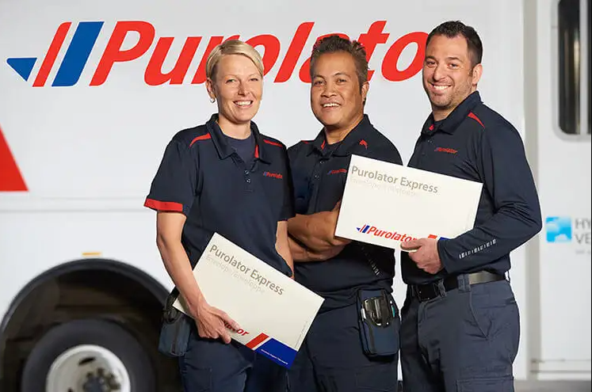

Work term 03 / Purolator
Summer 2025
Business Data Analyst
01
Introduction
In this blog post, I will be going over my third co-op term as Business Data Analyst at Purolator Inc.
02
About the employer
For my third co-op work term, I joined Purolator Inc., a leading Canadian logistics and courier company specializing in transportation, supply chain, and parcel delivery services.
At Purolator, I worked as a Business Data Analyst, where I developed interactive Power BI dashboards to provide actionable insights for business stakeholders and wrote Python scripts to automate manual reporting processes. This work streamlined data workflows, reduced reporting time, and improved the accuracy of recurring operational reports.
03
Goals & learning outcomes
Communicating - Oral Communication
Goal: Effective oral communication is essential in a fast-paced logistics environment like Purolator. As a Business Data Analyst, I aimed to clearly explain insights from Power BI reports, discuss data model structures with my team, and present automation results from Python scripts to stakeholders.
Reflection: I’ve made significant progress in this area. Whether it was walking business users through dashboards, clarifying technical details with IT colleagues, or updating managers on automation progress, I learned to articulate findings in a way that matched the audience. This strengthened both collaboration and trust in my work.
Critical & Creative Thinking - Problem Solving
Goal: Problem-solving is critical for building efficient reports and automation workflows. My goal was to strengthen my ability to identify inefficiencies in manual reporting, troubleshoot data model issues in Power BI, and design creative automation solutions with Python.
Reflection: I encountered challenges such as inconsistent data sources, complex joins in data models, and automation scripts that needed debugging. By breaking down problems, analyzing root causes, and testing multiple solutions, I became more confident in solving real-world data challenges quickly and effectively.
Literacy - Technological Literacy
Goal: Enhance my technological literacy by deepening my skills in Power BI data modeling and Python automation frameworks like Playwright and pandas. Staying adaptable to new tools was key to delivering value in a data-driven role.
Reflection: I successfully improved my ability to work with advanced DAX functions, relationships in data models, and automation libraries. Learning to adapt quickly allowed me to deliver more complex dashboards and automate repetitive reporting tasks, boosting both efficiency and confidence in my technical skillset.
Professional & Ethical Behaviour - Personal Organization/Time Management
Goal: Develop professional time management and organizational skills to balance multiple dashboard projects, stakeholder requests, and automation tasks while maintaining accuracy and quality.
Reflection: I learned how to prioritize competing deadlines, document my automation scripts, and schedule report refreshes to ensure reliability. By staying organized, I consistently met deliverables and became a dependable team member in a busy corporate environment.
Overall Reflection
When I started this co-op term, I wanted to gain hands-on experience with Power BI and Python automation in a real-world business setting. I achieved this by building data models, designing reports, and writing scripts to automate repetitive tasks. These projects showed me how data analytics can directly improve operational efficiency.
I specifically focused on learning Power BI data modeling and libraries like Playwright and pandas because they are widely used in analytics and automation. Strengthening these skills gave me a strong foundation for delivering both insights and process improvements.
Looking back, I’m proud of the progress I’ve made. I now feel much more confident in creating scalable dashboards, automating workflows, and communicating results effectively. If there’s one area I could improve, it would be asking for feedback more often, as it could have helped me refine my solutions faster.
04
Job description
In my role as a Business Data Analyst at Purolator Inc., I worked extensively with Power BI data models to design and optimize data structures, ensuring accurate relationships and calculations across multiple sources. I developed interactive reports and dashboards that provided actionable insights for business stakeholders and streamlined decision-making processes.
Alongside reporting, I also wrote Python scripts using Playwright and pandas to automate repetitive manual tasks, such as data extraction, transformation, and report generation. These automation workflows significantly reduced processing time, minimized human error, and improved overall reporting efficiency.
05
Conclusions
Overall, my time at Purolator Inc. was an invaluable learning experience. It gave me the opportunity to apply my data analysis and automation skills in a real-world logistics environment, working with complex datasets that directly supported business operations. I gained a deeper understanding of how data models, reporting, and automation play a crucial role in driving efficiency and decision-making, and it reinforced my passion for leveraging technology to solve real business challenges.
06
Acknowledgments
I would like to express my gratitude to Pablo Reyes for being an outstanding manager and providing support throughout my co-op term. A special thanks to Abhishek Rawat, whose mentorship helped me greatly in improving my software development practices and understanding the nuances of working in a professional environment. Their guidance made my time at Purolator Inc. both rewarding and educational.
